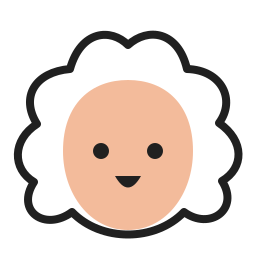

어느 박에서
건반이 쉴까요?
발끝으로 하나, 둘, 셋, 넷. 톡 소리에 맞춰 세면서 건반 소리만 쏙 빠진 박을 찾아요.
듣고 골라요
80 BPM준비 박자 네 번 뒤에 문제가 두 번 들려요.
재생 위치와 음량
소리를 열지 못했어요. 음원 파일 열기
건반이 쉰 박을 눌러요.

이제 내가 내는 문제
다른 한 박을 골라 속으로만 세고, 나머지 세 박에는 손뼉을 쳐요. 가족에게 어느 박이 쉬었는지 물어보세요.